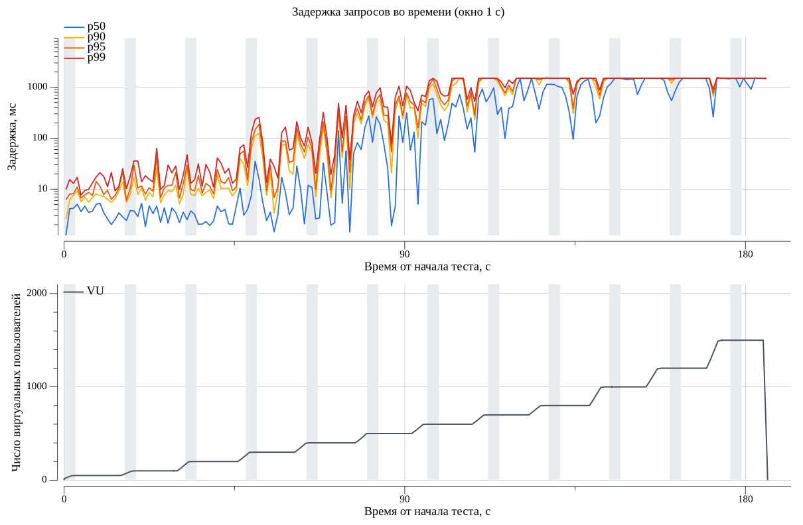
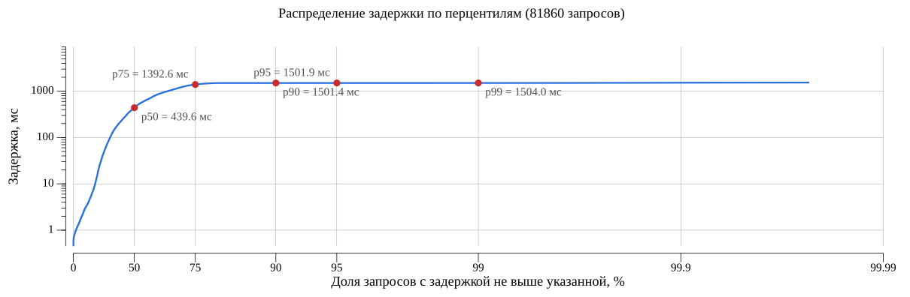
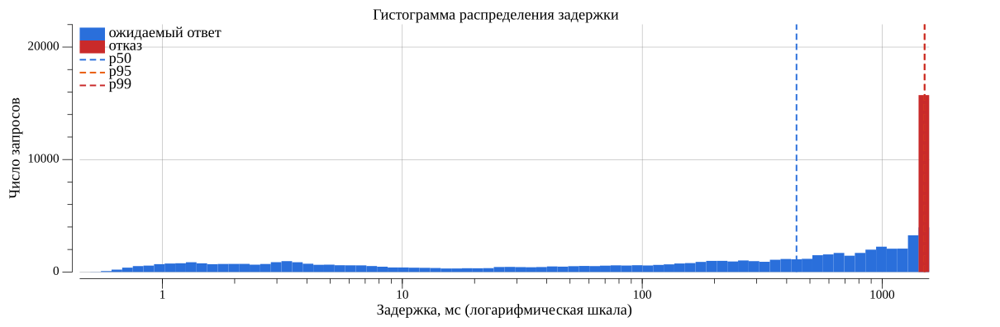
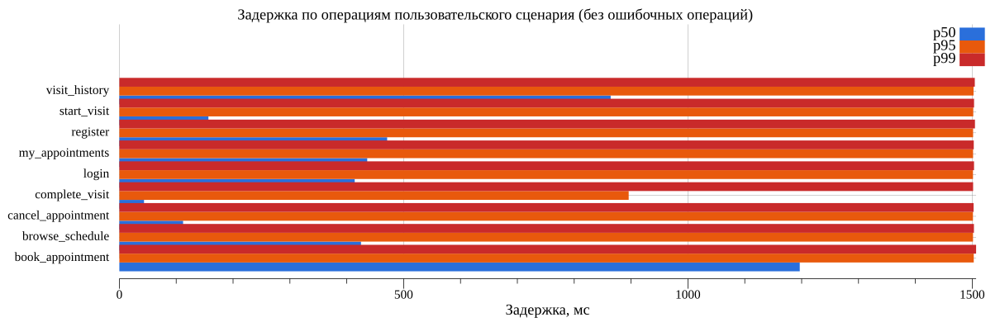
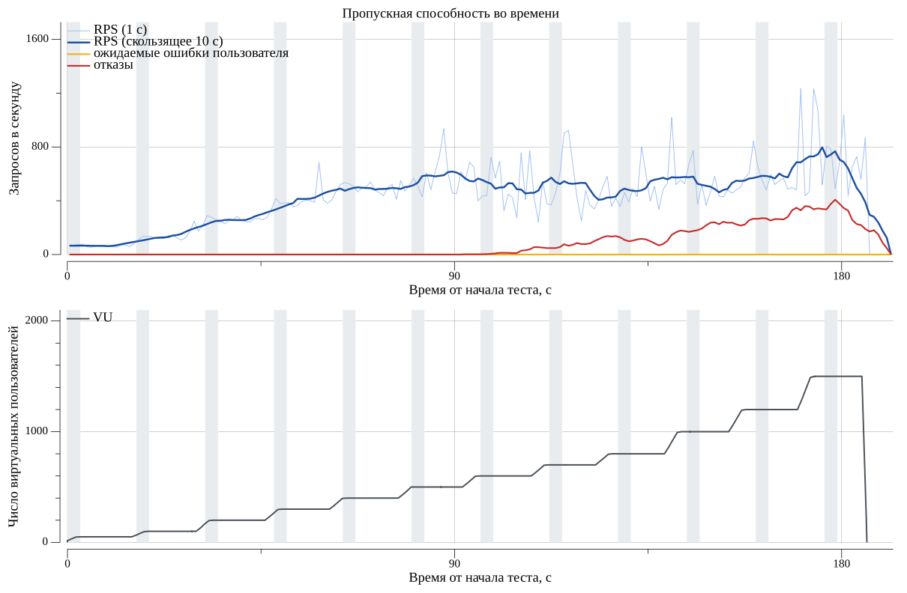
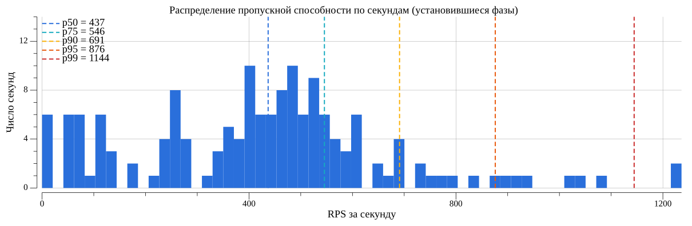
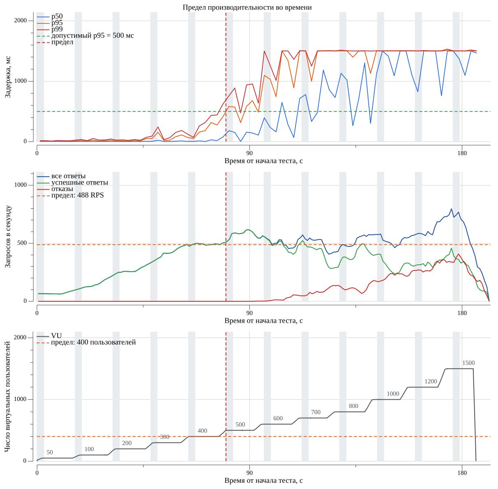
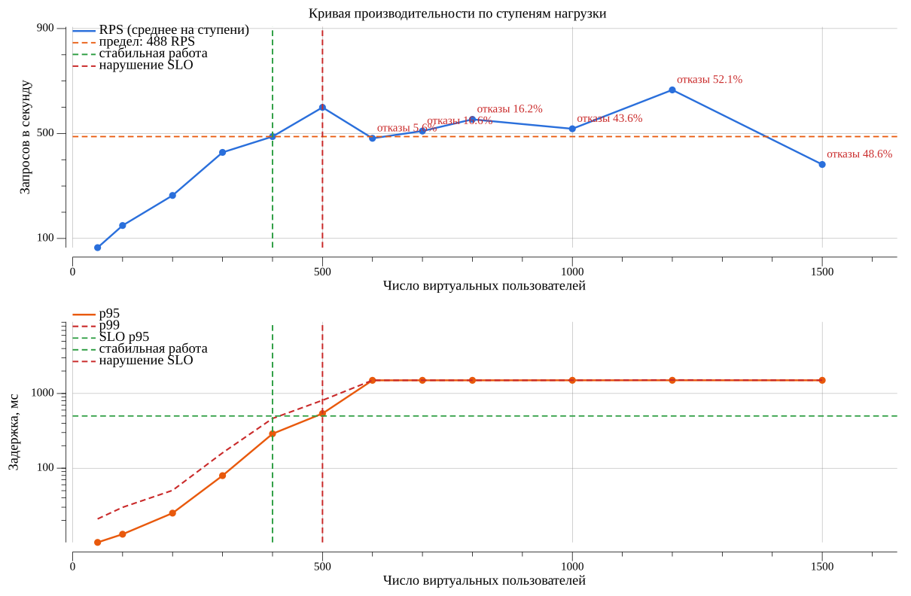
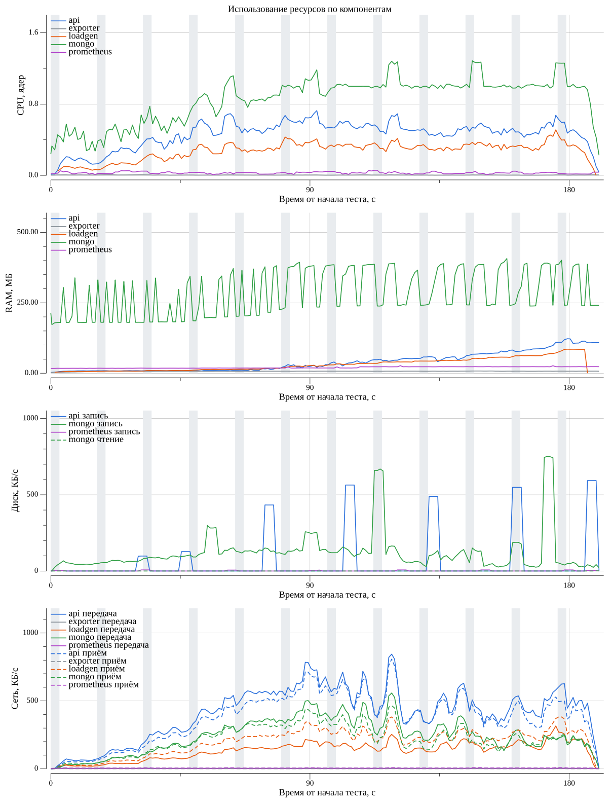

Ступенчатое увеличение нагрузки
Запросов81852
RPS среднее / медиана426 / 437
p50 / p95 задержки440 / 1502 мс
p99 задержки1504 мс
Отказы19.22%
Ошибочные операции0.00%
Стабильная работа до 400 VU (~488 RPS). Нарушение SLO начинается с 500 VU. Максимальная пропускная способность 666 RPS при 1200 VU.
Задержка
| Задержка, мс | count | min | mean | p50 | p75 | p90 | p95 | p99 | max |
|---|---|---|---|---|---|---|---|---|---|
| Все запросы | 81852 | 0.45 | 641 | 440 | 1393 | 1501 | 1502 | 1504 | 1555 |
| Корректные операции | 81852 | 0.45 | 641 | 440 | 1393 | 1501 | 1502 | 1504 | 1555 |
| Ошибочные операции | 0 | — | — | — | — | — | — | — | — |



Операции пользовательского сценария
| Операция | count | min | mean | p50 | p75 | p90 | p95 | p99 | max | Отказы | Ошибочные |
|---|---|---|---|---|---|---|---|---|---|---|---|
| book_appointment | 13291 | 1.16 | 869 | 1197 | 1501 | 1502 | 1503 | 1507 | 1537 | 44.90% | 0.00% |
| browse_schedule | 13688 | 0.58 | 593 | 425 | 1126 | 1501 | 1501 | 1503 | 1555 | 10.78% | 0.00% |
| cancel_appointment | 2261 | 0.72 | 359 | 112 | 551 | 1283 | 1501 | 1502 | 1518 | 7.96% | 0.00% |
| complete_visit | 4290 | 0.81 | 199 | 43.4 | 262 | 608 | 896 | 1502 | 1506 | 1.79% | 0.00% |
| login | 13865 | 0.50 | 586 | 414 | 1113 | 1499 | 1501 | 1503 | 1555 | 9.52% | 0.00% |
| my_appointments | 12995 | 0.54 | 633 | 436 | 1344 | 1501 | 1502 | 1503 | 1518 | 12.25% | 0.00% |
| register | 3835 | 0.45 | 617 | 471 | 1248 | 1501 | 1502 | 1505 | 1539 | 11.40% | 0.00% |
| start_visit | 5049 | 1.07 | 444 | 157 | 755 | 1501 | 1502 | 1503 | 1513 | 15.03% | 0.00% |
| visit_history | 12586 | 0.85 | 810 | 864 | 1501 | 1502 | 1502 | 1505 | 1537 | 31.17% | 0.00% |

Пропускная способность
| Показатель | count | min | mean | p50 | p75 | p90 | p95 | p99 | max |
|---|---|---|---|---|---|---|---|---|---|
| RPS за секунду | 192 | 0.00 | 426 | 437 | 546 | 695 | 822 | 1086 | 1235 |


Фазы нагрузки
| Участок | VU | RPS ср. | RPS p50 | RPS p5 | p50 мс | p95 мс | p99 мс | Отказы | CPU api | CPU mongo | RAM api, МБ | SLO |
|---|---|---|---|---|---|---|---|---|---|---|---|---|
| разгон до 50 | 50 | 69.3 | 71.0 | 62.0 | 3.70 | 7.93 | 14.9 | 0.00% | 0.03 | 0.36 | 3.94 | да |
| 50 VU | 50 | 65.0 | 62.0 | 54.6 | 3.62 | 10.1 | 20.9 | 0.00% | 0.17 | 0.41 | 7.96 | да |
| разгон до 100 | 100 | 127 | 135 | 112 | 3.46 | 14.3 | 31.7 | 0.00% | 0.15 | 0.37 | 8.76 | да |
| 100 VU | 100 | 149 | 133 | 115 | 3.47 | 13.1 | 29.9 | 0.00% | 0.28 | 0.50 | 8.63 | да |
| разгон до 200 | 200 | 276 | 276 | 262 | 3.22 | 20.3 | 38.9 | 0.00% | 0.40 | 0.67 | 8.98 | да |
| 200 VU | 200 | 264 | 258 | 236 | 3.05 | 25.0 | 50.4 | 0.00% | 0.39 | 0.59 | 9.08 | да |
| разгон до 300 | 300 | 393 | 383 | 379 | 7.43 | 99.3 | 176 | 0.00% | 0.50 | 0.77 | 9.64 | да |
| 300 VU | 300 | 428 | 400 | 361 | 4.03 | 79.4 | 160 | 0.00% | 0.57 | 0.89 | 10.5 | да |
| разгон до 400 | 400 | 522 | 526 | 507 | 5.12 | 68.2 | 123 | 0.00% | 0.52 | 0.87 | 10.9 | да |
| 400 VU | 400 | 488 | 493 | 427 | 17.2 | 289 | 463 | 0.00% | 0.52 | 0.85 | 13.6 | да |
| разгон до 500 | 500 | 501 | 506 | 436 | 201 | 582 | 770 | 0.00% | 0.64 | 1.01 | 25.6 | нет |
| 500 VU | 500 | 599 | 607 | 431 | 95.1 | 539 | 811 | 0.00% | 0.62 | 1.01 | 25.1 | нет |
| разгон до 600 | 600 | 532 | 438 | 436 | 380 | 1134 | 1501 | 1.38% | 0.54 | 0.97 | 35.8 | нет |
| 600 VU | 600 | 482 | 425 | 261 | 342 | 1501 | 1503 | 5.62% | 0.57 | 1.00 | 37.1 | нет |
| разгон до 700 | 700 | 477 | 460 | 379 | 734 | 1502 | 1504 | 20.11% | 0.53 | 0.99 | 48.5 | нет |
| 700 VU | 700 | 509 | 419 | 303 | 655 | 1502 | 1504 | 16.55% | 0.55 | 1.08 | 48.5 | нет |
| разгон до 800 | 800 | 403 | 392 | 360 | 1122 | 1503 | 1505 | 40.83% | 0.51 | 0.99 | 56.1 | нет |
| 800 VU | 800 | 554 | 521 | 373 | 639 | 1502 | 1503 | 16.22% | 0.47 | 1.00 | 53.3 | нет |
| разгон до 1000 | 1000 | 606 | 672 | 403 | 1501 | 1503 | 1505 | 53.96% | 0.53 | 1.10 | 64.6 | нет |
| 1000 VU | 1000 | 518 | 481 | 404 | 1476 | 1503 | 1505 | 43.62% | 0.52 | 1.06 | 72.3 | нет |
| разгон до 1200 | 1200 | 563 | 554 | 487 | 941 | 1502 | 1504 | 16.69% | 0.50 | 0.99 | 79.0 | нет |
| 1200 VU | 1200 | 666 | 521 | 456 | 1501 | 1503 | 1517 | 52.14% | 0.52 | 1.02 | 88.8 | нет |
| разгон до 1500 | 1500 | 694 | 787 | 520 | 1501 | 1502 | 1504 | 56.77% | 0.61 | 1.26 | 113 | нет |
| 1500 VU | 1500 | 382 | 438 | 0.00 | 1499 | 1502 | 1505 | 48.62% | 0.36 | 0.83 | 111 | нет |
Поиск предела производительности


Использование ресурсов
| Компонент | Метрика | min | max | mean | median | p95 |
|---|---|---|---|---|---|---|
| api | CPU, ядер | 0.02 | 0.73 | 0.46 | 0.50 | 0.66 |
| api | Троттлинг CPU, с/с | 0.00 | 0.02 | 0.00 | 0.00 | 0.01 |
| api | Чтение с диска, КБ/с | 0.00 | 0.00 | 0.00 | 0.00 | 0.00 |
| api | Запись на диск, КБ/с | 0.00 | 593 | 59.8 | 0.00 | 549 |
| api | RAM (working set), МБ | 2.88 | 122 | 39.8 | 30.3 | 109 |
| api | Сеть, приём КБ/с | 0.22 | 808 | 374 | 398 | 656 |
| api | Сеть, передача КБ/с | 0.10 | 844 | 413 | 438 | 694 |
| api | Процессы и потоки | 7.00 | 15.0 | 9.13 | 9.00 | 10.0 |
| exporter | CPU, ядер | 0.00 | 0.01 | 0.01 | 0.00 | 0.01 |
| exporter | Троттлинг CPU, с/с | 0.00 | 0.00 | 0.00 | 0.00 | 0.00 |
| exporter | Чтение с диска, КБ/с | 0.00 | 0.00 | 0.00 | 0.00 | 0.00 |
| exporter | Запись на диск, КБ/с | 0.00 | 0.00 | 0.00 | 0.00 | 0.00 |
| exporter | RAM (working set), МБ | 2.57 | 7.87 | 7.02 | 7.25 | 7.50 |
| exporter | Сеть, приём КБ/с | 0.48 | 0.69 | 0.50 | 0.48 | 0.61 |
| exporter | Сеть, передача КБ/с | 2.56 | 5.05 | 4.12 | 3.99 | 5.04 |
| exporter | Процессы и потоки | 4.00 | 6.00 | 5.76 | 6.00 | 6.00 |
| loadgen | CPU, ядер | 0.00 | 0.51 | 0.28 | 0.30 | 0.41 |
| loadgen | Троттлинг CPU, с/с | 0.00 | 0.00 | 0.00 | 0.00 | 0.00 |
| loadgen | Чтение с диска, КБ/с | 0.00 | 0.00 | 0.00 | 0.00 | 0.00 |
| loadgen | Запись на диск, КБ/с | 0.00 | 0.00 | 0.00 | 0.00 | 0.00 |
| loadgen | RAM (working set), МБ | 0.00 | 85.2 | 31.2 | 26.6 | 74.8 |
| loadgen | Сеть, приём КБ/с | 0.00 | 382 | 202 | 225 | 332 |
| loadgen | Сеть, передача КБ/с | 0.00 | 316 | 136 | 150 | 227 |
| loadgen | Процессы и потоки | 0.00 | 9.00 | 8.10 | 8.00 | 9.00 |
| mongo | CPU, ядер | 0.23 | 1.29 | 0.86 | 0.98 | 1.25 |
| mongo | Троттлинг CPU, с/с | 0.01 | 1.18 | 0.62 | 0.86 | 1.16 |
| mongo | Чтение с диска, КБ/с | 0.00 | 0.84 | 0.01 | 0.00 | 0.00 |
| mongo | Запись на диск, КБ/с | 1.17 | 752 | 123 | 95.0 | 284 |
| mongo | RAM (working set), МБ | 173 | 407 | 284 | 245 | 389 |
| mongo | Сеть, приём КБ/с | 0.17 | 466 | 214 | 206 | 386 |
| mongo | Сеть, передача КБ/с | 0.24 | 558 | 242 | 241 | 474 |
| mongo | Процессы и потоки | 39.0 | 155 | 96.3 | 94.0 | 148 |
| prometheus | CPU, ядер | 0.01 | 0.06 | 0.03 | 0.03 | 0.05 |
| prometheus | Троттлинг CPU, с/с | 0.00 | 0.00 | 0.00 | 0.00 | 0.00 |
| prometheus | Чтение с диска, КБ/с | 0.00 | 0.00 | 0.00 | 0.00 | 0.00 |
| prometheus | Запись на диск, КБ/с | 0.00 | 7.09 | 0.93 | 0.00 | 7.00 |
| prometheus | RAM (working set), МБ | 17.0 | 26.8 | 20.3 | 18.6 | 23.2 |
| prometheus | Сеть, приём КБ/с | 2.98 | 8.60 | 6.45 | 6.33 | 8.23 |
| prometheus | Сеть, передача КБ/с | 0.48 | 1.41 | 1.03 | 0.96 | 1.34 |
| prometheus | Процессы и потоки | 8.00 | 14.0 | 8.13 | 8.00 | 8.00 |

Коды ответов
| Код | Запросов |
|---|---|
| 200 | 51113 |
| 201 | 15008 |
| 500 | 15731 |
Окружение прогона
| Компонент | Логические CPU | Квота CPU | Резерв RAM, МБ | Лимит RAM, МБ | Образ | ID образа |
|---|---|---|---|---|---|---|
| api | 0,1 | 1 | 512 | 512 | vitaline-lab4-api:20261113-094849-ramp-txsz | 6a4010bb2944 |
| exporter | 6,7 | — | 64 | 64 | vitaline-lab4-exporter:1 | b58c2ecc0ca2 |
| loadgen | 4,5 | — | 2048 | 2048 | vitaline-lab4-loadgen:1 | 0b0105a43a6d |
| mongo | 2,3 | 1 | 1024 | 1024 | mongo:7 | 9896df581dfd |
| prometheus | 6,7 | — | 768 | 768 | prom/prometheus:v3.5.0 | 63805ebb8d2b |